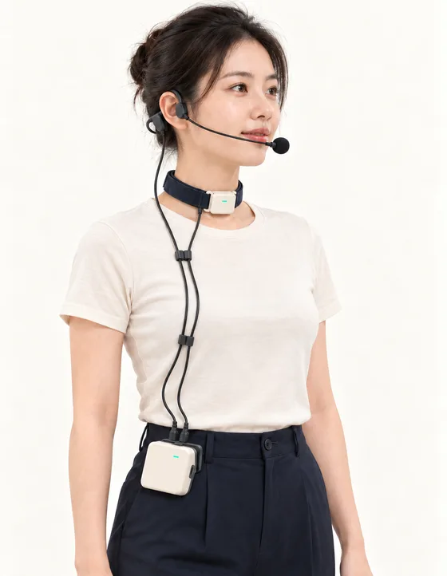

空气声MIC
头戴麦克风
在口侧记录经空气传播的声音，保留发声的时间与频率特征。
核心系统
面向教师、播音员、歌手、客服等高频用嗓人群，项目探索用可穿戴设备记录发声任务，让声音与颈部振动可以配对观察。

穿戴概念图在口侧记录经空气传播的声音，保留发声的时间与频率特征。
贴近颈前皮肤，记录发声时传到颈部体表的机械振动。
声振演示
切换发声任务或拖动游标，观察两路波形随时间的变化。VibScope 研究端支持双通道显示、记录回放和导出。
研发图集
查看穿戴样机、结构、采集板和软件界面。点击图片可放大。
阶段成果
校内采集与体验问卷帮助团队改进声振记录流程，了解参与者试戴时优先关注的问题。
校内采集参与者
体验问卷
80 份问卷中，68 人选择「比较愿意」或「非常愿意」。
各项占 80 份体验问卷的比例
数据来自 2026 年 11 月中期材料。问卷份数与校内采集人数分别统计。
第十一届全国大学生生物医学工程创新设计竞赛。
走访非遗传承人，了解用嗓需求并开展护嗓科普。
查看实践报道 ↗推进穿戴结构、采集硬件和双通道回放平台的联调。
优化佩戴一致性与采集流程，推进临床前验证准备。